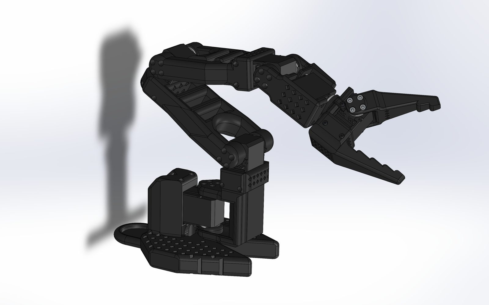
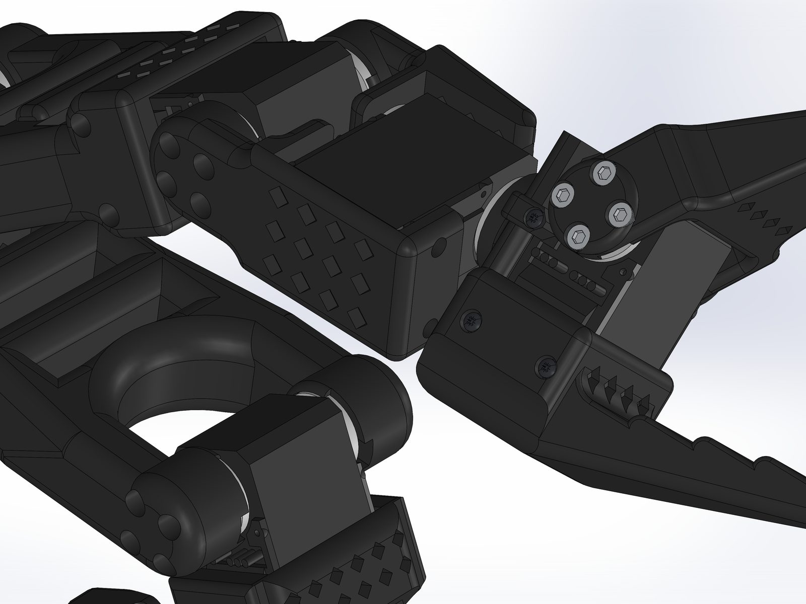
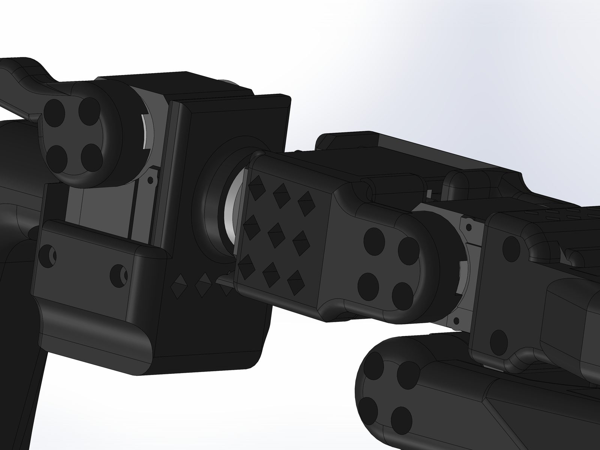
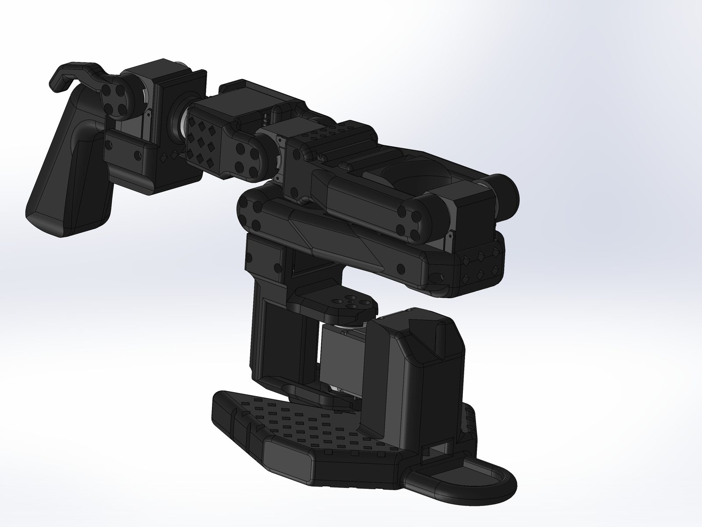
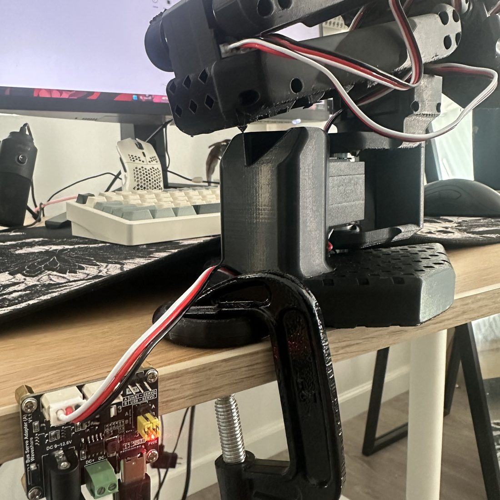

Why build it from scratch.
The SO-ARM100 / LeRobot ecosystem made low-cost imitation learning accessible, but I wanted full control over the geometry, tolerances and look of the arm rather than printing someone else's files. Designing every link and joint housing myself meant making real decisions about link lengths, servo pocket fits, fastening and printability, which is the experience I was after.
The end goal is not a replay machine. The policy should generalize a task, not repeat recorded joint angles. That drives two architectural choices: servos with position feedback for clean teleoperation, and cameras for perceptual context that joint angles alone can't give.
How teleoperation works
A leader arm is moved by hand. A follower arm mirrors it in real time by reading the leader's servo positions and commanding its own. Camera frames plus servo positions from each session are logged as a dataset, which trains a policy that maps what the camera sees to the next motor commands, so the arm can eventually do the task on its own.


Geometry, fits, and fastening.
| Degrees of freedom | 6: base yaw, shoulder, elbow, wrist pitch, wrist roll, gripper |
|---|---|
| Base | 120–150 mm diameter with a bolt-down flange for stability under fast leader moves |
| Upper arm | 140 mm |
| Forearm | 110 mm, elbow to wrist |
| Servo pocket | +0.3–0.5 mm total clearance; the 4 mm rear pivot boss bored to 4.2 mm for a snug pivot |
| Fasteners | M3 throughout: links screw directly into the servo horns, 3.4 mm clearance holes in mating parts |
| Aesthetic | White and electric blue, capsule links, cylindrical joint housings, exposed servo horns |
| Fabrication | FDM 3D printing (slicer selection pending) |
Servo choice was the key decision
I chose Feetech STS3215 serial-bus servos (19 kg·cm, 7.4 V) over cheaper hobby servos because they report position back over the bus. That feedback is what makes native motion mirroring possible. A simpler servo like the LX-16A would need custom Python drivers and doesn't return position cleanly, which would make the teleoperation loop fragile before any learning happens.
I have NEMA 17 steppers on hand for base rotation, but steppers complicate LeRobot integration (no absolute position without extra encoders), so they're used sparingly or not at all.
CAD problems solved along the way
- Chamfer asymmetry on angled faces. SolidWorks measured the chamfer along the tilted face normal rather than symmetrically. Fixed by redefining the chamfer references so both legs measured from the intended edges.
- Floating assembly component. An under-defined part drifted off-screen in the assembly. Diagnosed the missing mates and reinserted it with a fully defined mate set.




From hardware to a policy.
The learning side runs in WSL2 rather than native Windows, since LeRobot and its dependencies are much happier on Linux. Servo IDs are assigned with Feetech's debug tool before the bus comes up in LeRobot.
| Language | Python 3.10 / 3.11 |
|---|---|
| Framework | LeRobot with the feetech extra |
| Training | PyTorch with CUDA |
| Media | FFmpeg for camera capture and dataset encoding |
| Hosting | Hugging Face for datasets and checkpoints |
| Environment | WSL2, Git |
// roadmap
- Architecture & components. Servos, control approach, software stack.done
- Full arm CAD in SolidWorks.now
- Slice and print all parts, fit-check servos and horn screws.next
- Assign servo IDs and validate the bus.
- Stand up the environment and integrate LeRobot.
- Build a matching leader arm for teleoperation.
- Collect demonstrations with cameras.
- Train and evaluate a first policy.